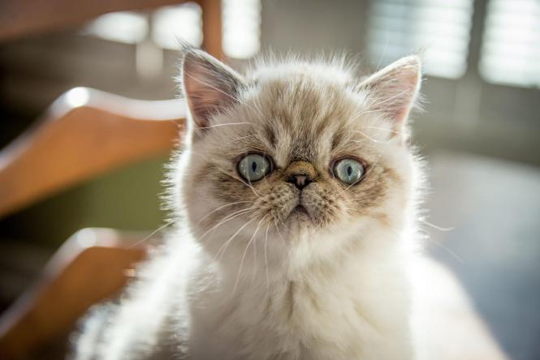
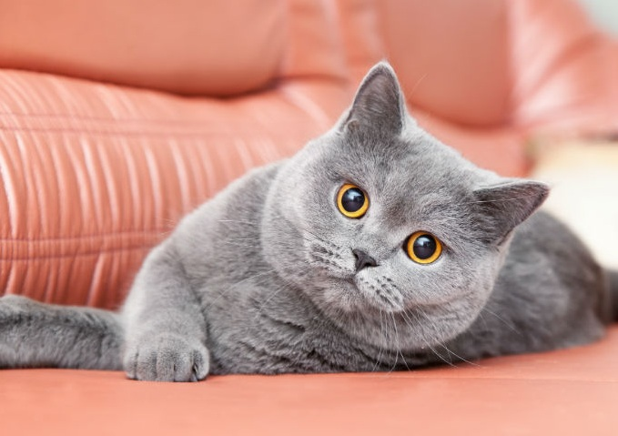
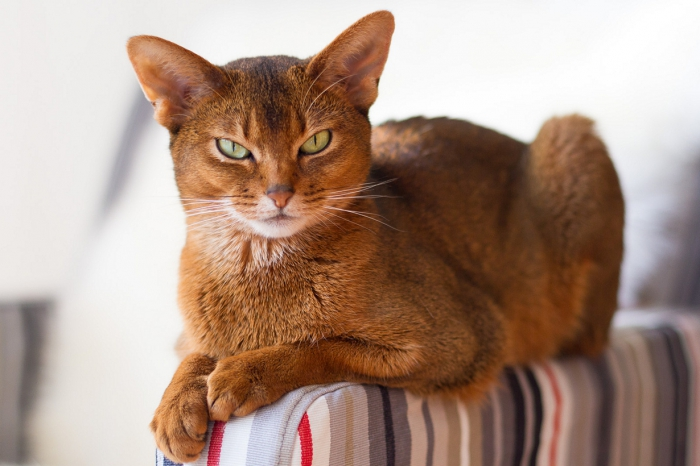
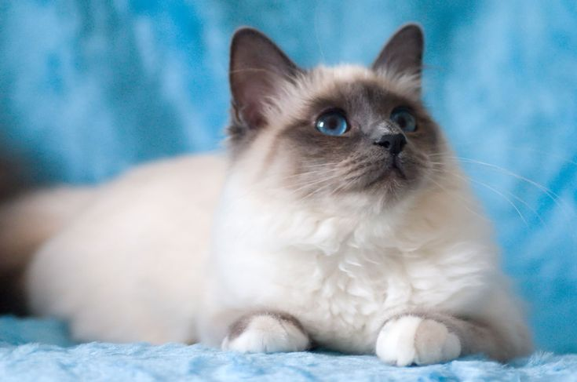
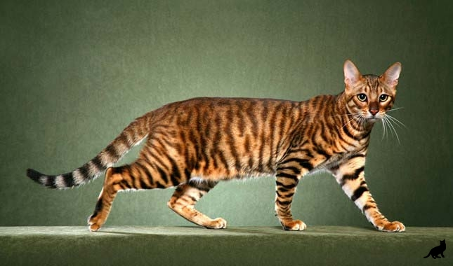
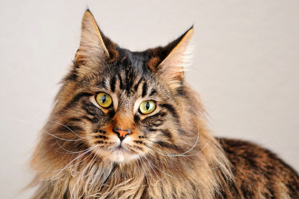
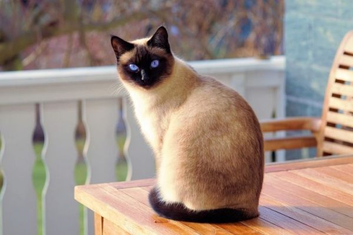
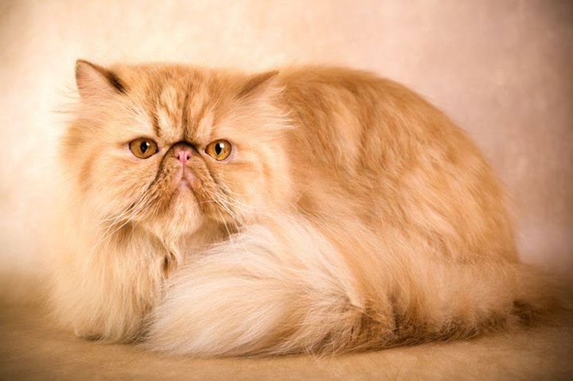

Породи кішок
10. Екзотична короткошерсна
Ця порода котів – екзотична короткошерста – була виведена в Америці при схрещуванні перських кішок з американськими короткошерстими. Ці коти дуже спокійні, ласкаві, доброзичливі і напрочуд милі. Вони полюбляють сидіти на колінах у свого господаря і рідко подають голос. Одночасно з тим вони досить активні, грайливі та кмітливі.
Для цієї породи котів характерне широке і пласке обличчя, маленькі вуха і великі очі. Перевагою є те, що їхнє коротке хутро не потребує особливого догляду. Екзотична короткошерста може бути сірого, чорного, коричневого та молочного кольору.
9. Британська короткошерста
Британська короткошерста – це одна з найстаріших порід кішок. Ця порода була імпортована Великобританією з Єгипту в I ст. н. е. Британські короткошерсті надзвичайно ласкаві і спокійні. Вони міцно прив’язуються до членів сім’ї і добре ладнають з іншими домашніми тваринами.
Їхнє хутро коротке, але дуже густе, пружне і тверде на дотик. Найпопулярніші кішки цієї породи сірого (з легким відтінком блакитного) кольору, хоч є також чорні, білі, золотисто-руді та коричневі кішки.
8. Абісинська кішка
Існує кілька гіпотез про походження цієї породи, одна з яких твердить, що абісиньські кішки були виведені від своїх диких неодомашнених родичів. Мабуть, саме це і відбилося на характер абісинки: ця кішка дуже жвава, рухлива, активна та грайлива, вона не любить бути замкненою в тісних приміщеннях і потребує простору.
Попри це тварина дуже слухняна і легко дресирується. Її навіть можна привчити приносити предмети. Характерною ознакою абісинських кішок є великі широкі вертикально поставлені вуха.
7. Бірманська кішка
Вважається, що цю породу кішок почали розводити служителі храмів та монастирів Бірми (колонія Британської імперії до 1937 року, сьогодні – Республіка Союзу М’янма), де їх вважали священними.
Особливість цієї породи – це характерне сіро-молочне забарвлення, довга шерсть та темно-блакитні овальні очі. Ці кішки дуже лагідні, спокійні, кмітливі та дружелюбні. Вони легко уживаються з іншими домашніми тваринами і люблять бути завжди поруч зі своїми господарями.
6. Тойгер
Уважно подивіться на цього котика. Нікого не нагадє? Саме так, особлива риса цієї породи – неймовірна схожість з тиграми. Сама назва натякає на вигляд цього кота: поєднання двох англійських слів “toy” – іграшка і “tiger” – тигр, тобто “іграшковий тигр”.
Тойгери грайливі, легко прив’язуються до людей і піддаються навчанню. Але будьте обережні: ці коти люблять полювати на маленьких тварин, тож разом із папугою чи мишкою він не зживеться.
5. Шотландська висловуха

Завдяки своєму кумедному та милому вигляду ці кішки стали справжніми зірками Інтернету. Їхньою характерною особливістю є вуха, які загнуті вперед і вниз. Причиною незвичайної зовнішності цих кішок є генна мутація. Вони також мають кругле обличчя і великі круглі очі.
Шотландські висловухі мають спокійний, врівноважений характер, легко знаходять спільну мову з іншими домашніми тваринами та дуже прив’язуються до людей.
4. Регдол

Регдол – це приваблива напівдовгошерста кішка з дивовижними блакитними очима. Вона дуже ласкава, ніжна, миролюбна і прихильна до людей. Коти цієї породи надають перевагу товариству людини перед будь-яким іншим і не зносять самотності, усюди йдуть за господарями. А ще вони відомі тим, що вітають вас у дверях так само, як сторожові собаки.
Однак основна їхня особливість полягає в наявності зниженого м’язового тонусу (явище, якому поки що не можуть дати пояснення). Варто тільки взяти кішку на руки, як одразу відчуєш, що вона повністю розслабилася.
3. Мейн-кун
Назва породи Мейн-кун досить символічна: частка “Мейн” вказує на те, що родом вони зі штату Мен у США, а “Кун” – через схожість з єнотами (від англ. “coon” – “єнот”). Ці кішки особливі тим, що часто виростають до великих розмірів, іноді вони сягають більше 10 кг. Їхня шерсть густа та кошлата, очі великі, круглі та виразні.
Мейн-куни за характером дружні та грайливі, легко адаптуються до різноманітних умов навколишнього середовища.
2. Сіамська кішка
Сіамська кішка – це порода кішок, що не одне століття жили при палацах і храмах у Сіамі (Таїланді), поки король не подарував пару сіамських кішок британському консулові.
Характерна риса сіамських кішок – насичені темно-сині або блакитні очі. Ці кішки дуже елегантні та стрункі. Їхнє тіло довге, у формі труби, а лапи акуратні та маленькі. Хутро в сіамських кішок коротке, блискуче і ніжне на дотик.
Характер цих кішок незвичайний. Вони дуже енергійні, рухливі, кмітливі, спритні й швидкі істоти. Складається враження, що вони невтомні, а їхній допитливості немає меж.
1. Перська кішка
Довгошерсті та елегантні перські коти – одна з найстаріших і найпопулярніших порід кішок у світі. Вважається, що ця приваблива порода котів походить з Персії (колишня назва Ірану).
Хутро цих кішок надзвичайно довге (до 15 см) та густе, має ніжну, тонку текстуру. Хвіст дуже пухнастий, особливо на кінчику. Перські коти існують в понад 80 кольорових варіантах, включаючи білий, чорний, шоколадний, рудий, кремовий та сірий.
За характером перси доволі ледачі, спокійні, тихі і дружелюбні.Більшість власників кішок люблять цю породу за їхню тиху та спокійну поведінку – вони ніколи не гасають і не стрибають по дому і більшу частину свого часу люблять проводити з членами дому та іншими домашніми тваринами.